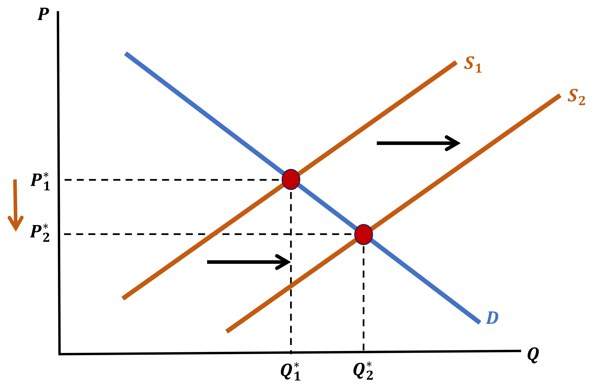
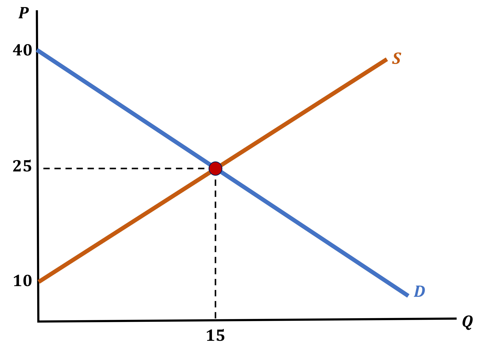
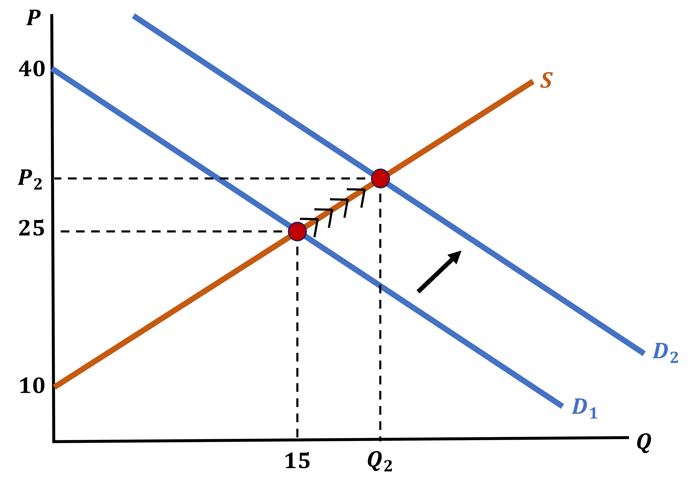
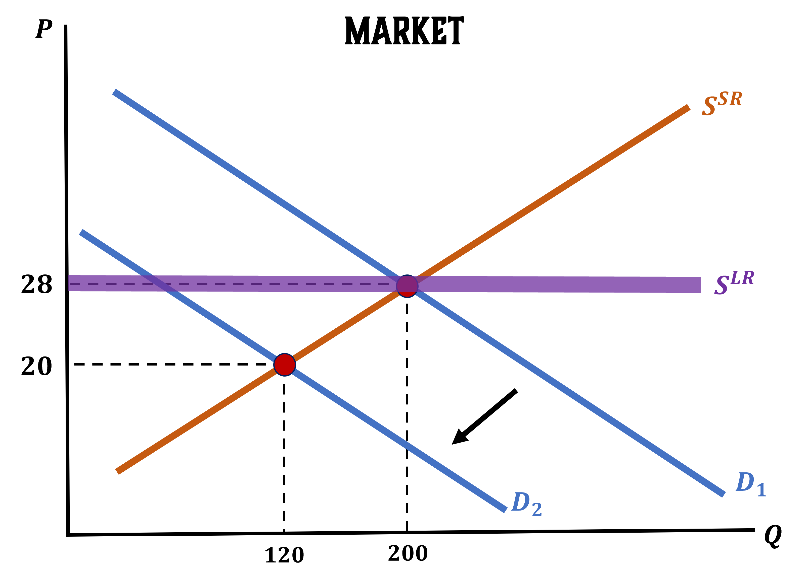
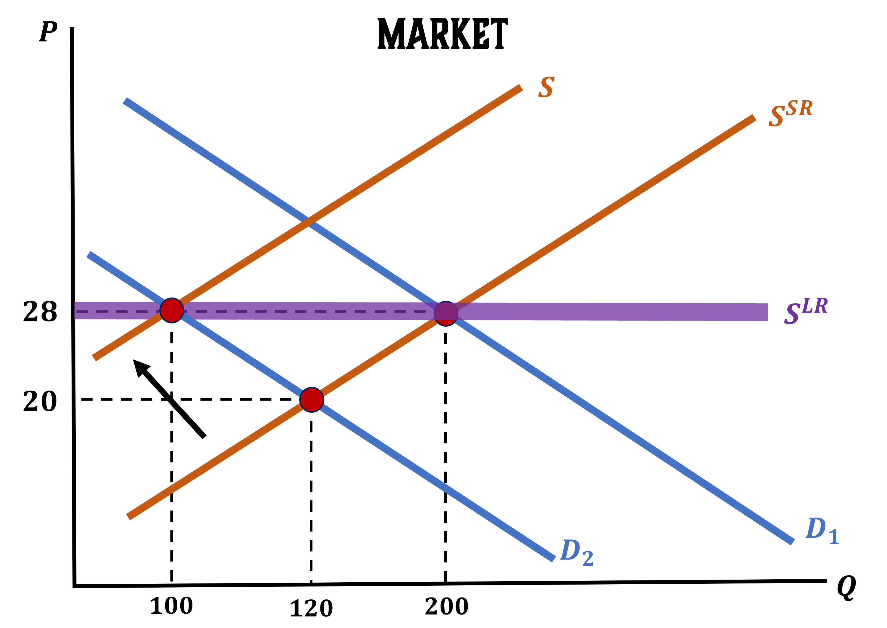

Market Supply
EC 311 - Intermediate Microeconomics
2025
Outline
Chapter 08
Topics
- Perfect Competition: Short-Run (8.3)
- Perfect Competition: Long-Run (8.4)
Pop Quiz!
Costs Question
Currently, a firm with a cost function of \(C(Q) = \frac{1}{2}Q^2\), is producing 30 units in a perfectly competitive market.
If the price they sell their goods for were $30, how would you describe their short-run situation?
- They are producing too much
- They aren’t producing enough
- They are maximizing profit
- Impossible to tell
Costs Question (Answer)
Currently, a firm with a cost function of \(C(Q) = \frac{1}{2}Q^2\), is producing 30 units in a perfectly competitive market.
If the price they sell their goods for were $30, how would you describe their short-run situation?
- They are producing too much
- They aren’t producing enough
- They are maximizing profit
- Impossible to tell
Costs Question (Answer)
Recall that profit maximization happens when \(MR=MC\).
- \(\color{red}{ MC = \frac{\delta C}{\delta Q} = 2\frac{1}{2}Q^{2-1} = Q}\)
- \(\color{green}{MR = \$30}\)
- \(Q^s = 30\)
- \(\color{green}{MR = 30} = \color{red}{30 = MC}\)
- So profit is maximized
Perfect Competition: Short-Run
Short-Run Supply
Previously, we graphed the supply curve to include the firm’s shut-down decision:
Because the firm has to either produce something or nothing in the short term, this is the Short-Run Supply Curve
Short-Run vs Long-Run Supply
This is the short-run because the firm can’t operate on the margin of their fixed costs
- Eventually firms can enter by choosing to paying the startup costs
- or exit the market by recouping their fixed costs
What Affects Short-Term Supply?
What could change how much quantity firms are willing to produce in the short-run?
Anything that affects their marginal costs!
Technology (more productive inputs \(\downarrow\) MC \(\rightarrow\) \(\uparrow Q^s\))
Input prices (more expensive labor \(\uparrow MC \rightarrow \downarrow Q^s\)
What Does Not Affect Short-Term Supply?
Any fixed costs have to be treated as sunk costs in the short run, and do factor into MC
This includes:
Factory space
Contracted costs (annual, multi-year, etc.)
R&D costs
Producer Surplus
In the short run, a firm can earn a markup over their costs.
Another way of measuring this markup is the producer surplus
\[PS = TR - VC\]
- How much more does the firm gain in revenue compared to its costs
Producer Surplus
What does it look like?
Firm Supply -> Market Supply
A single firm \(i\)’s supply decision: pick \(q_i\) quantity to maximize profit
\[ MC_i(q_i) \bigg\rvert_{q_i\geq 0} = MR_i = P\]
\(MC_i\) is firm \(i\)’s supply curve, or willingness to sell
If we wanted the supply function we could rerrange: \(q_i^S = MC_i^{-1}(P)\)
Firm Supply -> Market Supply
An example:
\[ MC_i(q_i) = q_i^2 -20q_i +100 \]
Can be rewritten as \(MC = (q_i - 10)^2\)
\(q_i^S = MC_i^{-1}(P) = \sqrt{P} + 10\)
Market Supply
We will label Market Supply as \(Q^{S}\)
And it is obtained in the exact same way as market demand
- If you know the \(q_i^S\) of one firm, and there are 10 identical firms, then we get
\[ Q^{S} = 10 \cdot q_i^S \]
Market Supply Example
Consider up to 10 firms all with \(MC=q_i^2 - 20q + 100\)
- Then \(Q^S = 10 \cdot (\sqrt{P} +10)\)
Market Supply Example
Market Supply
If each firm has a different marginal cost function:
- (and thers are \(N\) number of firms)
\[Q^S = \sum_{i=1}^N q_i^S\]
Producer Surplus vs Profit
Producer Surplus:
\[PS = TR - VC\]
Profit:
\[\pi = TR - VC - FC\]
- The difference is fixed costs
Long-Run Market Supply
What could determine whether a firm enters or exists the market?
Producer Surplus
- A firm may operate with negative profit
- they will operate at a loss as long as it is less than their Fixed Costs
- But they won’t operate with negative producer surplus
- because that means it costs more to produce each unit than it sells for
In either case, the fact that profits are not zero has implications for the Long-Run
Short-Run to Long-Run: Exit Condition
\[ PS < 0 \]
- AKA \(TR < VC\), or \(P < min \{ ATC \}\)
Short-Run
Firms operate at a loss in order to offset some of their FC
Long-Run
Firms exit the market
Short-Run to Long-Run: Entry Condition?
What happens when we have
\[ PS > 0 \]
- AKA \(P > \min \{ ATC(Q^{*}) \}\)
Short-Run
Firms will produce and earn a positive economic profit
Long-Run
New firms (Firms outside the market) see these positive profits, and enter the industry to collect these profits themselves
Perfect Competition: Long-Run
Profits and Market Feedback
Firms entering or exiting the market has a really important feedback effect
Do your best to recall from EC 201:
When the number of firms in an industry increases, what effect does this have on the market price?
It DECREASES the price

Profits and Market Feedback
When the number of firms in an industry decreases, what effect does this have on the market price?
It INCREASES the price

Long-Run Feedback Effect
The feedback has predictable outcomes that we can organize in our minds
\(P > \min\{ATC(Q)\}\)
- In the Short-Run, firms in the market make positive economic profits
- In the Long-Run, new firms enter the market
- The market now has more firms, which means there is more quantity produced
- This repeats until
\[ P = \min\{ATC(Q)\} \]
\(P < \min\{ATC(Q)\}\)
- In the Short-Run, firms in the market make negative economic profits
- In the Long-Run, firms exit the market
- The market now has less firms, which means there is less quantity produced
- This repeats until
\[ P = \min\{ATC(Q)\} \]
Long-Run Outcomes
No matter what price is initially, in the Long-Run we will always return to
\[ P = \min\{ATC(Q)\} \]
How do shifts in quantity affect market prices?
Negative Profits
- With a decrease in quantity, market prices climb with each firm that leaves until we return to zero-profits
Positive Profits
- With an increase in quantity, market prices decrease with each entering firm until we return to zero-profits
Long-Run Outcomes
So if prices in the Long-Run will always be
\[ P = \min\{ATC(Q)\} \]
What does this imply about profits in the Long-Run
There are no economic profits in the Long-Run!
But let’s be careful with interpreting what this means
Profits in the Long-Run
Saying there are zero economic profits can be a tricky phrase so let’s dive in:
- It does not mean that the firm is making zero money
- They have already paid their Labor (wages) and Capital (or shareholders if they financed capital through equity, for example)
- After all responsibilities are dealt with, there are zero profits above and beyond that
Why Care About the Short-Run?
If we know what happens in the Long-Run, then why care about the Short-Run?
The Short-Run is where interesting things happen
- It is where firms make big money, before competitors can catch up (Think early Tesla days and the EV market)
- It is where firms lose a lot of money because they are stuck operating at a loss (any restaurant ever)
- It is where demand shifts can cause major price distortions
- This is an interesting dynamic that we will use to transition to thinking about the market
Demand Shift Dynamics
Let’s imagine the following market:
- The Short-Run market supply curve is \(P = Q_{S} + 10\) when \(P > 10\)
- Assume that \(\min\{ATC(Q)\} = 25\)
- The demand curve is \(P = 40 - Q_{D}\)

Demand Shift Dynamics
Because initial price of 25 is equal to \(\min\{ ATC(Q) \}\) and there are no profits
- The market is in its Long-Run Equilibrium
Now imagine that this product gets much more popular
- What do we expect to happen with Demand?
It should shift to the right (increases)
Demand Shift Dynamics - Product Got More Popular
Demand Shift Dynamics
With an increase in Demand, we see that prices have also increased
- In the Short-Run, the same number of firms produce more and earn positive profits
- In the Long-Run, new firms enter the market
- This increases supply
Demand Shift Dynamics - Entry of New Firms

Demand Shift Dynamics
With a Supply increase:
- The shift of supply counteracts the increase in Demand and the price returns to \(\min\{ATC(Q)\}\)
- However, a lot more good are supplied overall
- In the Long-Run, each firm is supplying the same amount at \(Q_{3}\) as they were in the initial equilibrium
- There are just more firms now
Long-Run Market Supply Curve
We can graph the Supply Curve in the Long-Run
It is simply a flat line at \(P = \min\{ATC(Q)\}\)
- The quantity (and the number of firms in the market) is determined by Demand
Long-Run Market Supply Curve

Let’s Look at an Example
In this example we will:
- Find the Short-Run supply cure of the firm
- Find the market Short-Run Supply Curve when there are 20 identical firms
- Find the market Long-Run Supply Curve
- Graph both market supply curves, add demand and quantity, assuming the Long-Run Equilibrium
The Cost Function of a firm is
\[ C(Q) = Q^{2} + 8Q + 100 \]
Short-Run Supply Curve
\[ C(Q) = Q^{2} + 8Q + 100 \]
Short-Run Supply is \(\; P = MC\)
\[\begin{align*} MC = \frac{\partial C(Q)}{\partial Q} = 2Q + 8 \end{align*}\]
Set P = MC
\[\begin{align*} P = 2Q + 8 \end{align*}\]
Market Short-Run Supply Curve with 20 Identical Firms
\[ P = 2Q + 8 \]
First, we find the individual firm supply function
\[\begin{align*} P &= 2Q + 8 \\ 2Q &= P - 8 \\ Q &= \frac{P - 8}{2} \end{align*}\]
Market Supply Function will be \(\; N \cdot Q = Q_{S}\)
\[\begin{align*} Q_{S} &= N \cdot Q \\ Q_{S} &= 20 \cdot \left( \frac{P - 8}{2} \right) \\ Q_{S} &= 10P - 80 \end{align*}\]
Market Supply Curve Is:
\[\begin{align*} Q_{S} &= 10P - 80 \\ 10P &= Q_{S} + 80 \\ P &= \frac{Q_{S}}{10} + 8 \end{align*}\]
Market Long-Run Supply Curve
\[ \text{LR-Supply: } P = \min\{ATC(Q)\} \;\;\;\; \& \;\;\;\; C(Q) = Q^{2} + 8Q + 100 \]
We want an amount of Quantity and we will use the Zero-Profit Condition
Use \(\; MC = ATC(Q)\)
\[\begin{align*} ATC(Q) &= MC \\ Q + 8 + \frac{100}{Q} &= 2Q + 8 \\ Q \cdot \left( Q + 8 + \frac{100}{Q} \right) &= Q \cdot (2Q + 8) \\ Q^{2} + 8Q + 100 &= 2Q^{2} + 8Q \\ Q^{2} &= 100 \\ Q^{*} &= 10 \end{align*}\]
We also need to find \(\; P^{*}\)
\[\begin{align*} MC(Q) &= 2Q + 8 \\ MC(10) &= 2(10) + 8 \\ MC &= 28 \\ \\ \end{align*}\]
Use fact that P = MC
\[\begin{align*} P = MC = 28 \end{align*}\]
Graph SR & LR Supply, Demand, & Quantity
A Sudden Shock!!!
Now let’s throw a curveball
The market does not exist in isolation, it is affected by the world
Imagine that there is a sudden event that decreases the Market Price to 20
This raises the following questions:
- What is the Short-Run Effect on \(Q^{*} \; \Rightarrow \;\) Individual Firm Supply
- What is the Short-Run Effect on \(Q_{S} \; \Rightarrow \;\) Market Supply
A Sudden Shock \(\; \Rightarrow \;\) P = 20
From our previous work, we know that
\[ P = 2Q^{*} + 8 \]
We can use this information to find \(\;Q^{*}\)
Individual Firm Supply
\[\begin{align*} P &= 2Q^{*} + 8 \\ 20 &= 2Q^{*} + 8 \\ 12 &= 2Q^{*} \\ Q^{*} &= 6 \end{align*}\]
Market Supply
20 Firms are still in the market
\[\begin{align*} Q_{S} &= N \cdot Q^{*} \\ Q_{S} &= 20 \cdot 6 \\ Q_{S} &= 120 \end{align*}\]
A Sudden Graph!!!
Shock Implications on the Long-Run
We can also ask questions about the Long-Run
What is the Long-Run Effect on \(Q^{*} \; \Rightarrow \;\) Individual Firm Supply
If we assume that the Long-Run Effect on \(Q_{S}\) means that Market Supply will be equal to 100. How many firms remain in the Long-Run?
Long-Run Effects of the Shock
We know for a fact that in the Long-Run price will return to 28
What is the effect on individual firm supply?
There is NO Long-Run Effect on firm supply
\[\begin{align*} Q^{*} = 10 \end{align*}\]
If we know that \(\; Q_{S} = 100 \;\), how many firms are producing in this market?
\[\begin{align*} Q_{S} &= N \cdot Q^{*} \\ 100 &= N \cdot 10 \\ \frac{100}{10} &= N \\ N &= 10 \end{align*}\]
After the price shock, 10 firms exit the market and 10 firms stay
A Sudden Long-Run Graph!!!
Distortions to Equilibrium
Market Shocks Create Distortions
We just saw how shocks to the market distort both the Short-Run & Long-Run
The Long-Run is very robust and is not really impacted by price shocks. But is this always the case?
When will distortions to equilibrium affect the Long-Run Equilibrium Price?
To answer that, we remember what determines the Long-Run Price
- Minimum Average Total Cost
So a shock will only affect the Long-Run Price if it impacts the Minimum Average Total Cost
Distortion Example - Oil Industry
What effect will the invention of more fuel-efficient cars have on the price of oil?
None! This is a shock to demand and thus the minimum ATC is unaffected
What effect will the invention of more fuel-efficient cars have generally?
- We will see a decrease in price and quantity in the Short-Run
- Firms in the oil industry will make negative profits
- Firms will begin to leave the industry
- The Supply Curve shifts to the left and re-establishes the Long-Run Price with a lower quantity produced
Distortion Example - Oil Industry
What effect will the invention of more efficient drilling technology have on the Long-Run Price of oil?
- This should lower the Long-Run Price. Why?
- Because this should lower the Average Total Cost
- This will increase quantity supplied and decrease the market price
Efficient Drilling Technology Effects on Oil Industry
Efficient Drilling Technology Effects on Oil Industry
Efficient Drilling Technology Effects on Oil Industry
Distortions to Equilibrium
One very specific type of cost change that we want to consider is Taxation
We will deal with two types of taxes:
LUMP-SUM TAXES
PER-UNIT TAXES
Lump-Sum Taxes
Under this tax structure firms have to pay a One-Time Fee to participate in the market
- Think licenses, permits, inspections, etc.
- These will affect a firm’s fixed costs
- Increasing fixed costs will increase the Minimum ATC
- Decreasing fixed costs will decrease the Minumum ATC
Lump-Sum Taxes
These form of taxes will NOT affect the firm’s Marginal Costs
The Short-Run Supply Curve is completely unnafected
- Imposing a Lump-sum Tax will have no Short-Run Effect
- In the Long-Run, firms will leave the industry as it converges to its new Long-Run Equilibrium
Per-Unit Taxes
These will affect the firm’s marginal costs DIRECTLY
Take for example the following firm:
\[ C(Q) = Q^{2} + Q + 20 \]
Where Marginal Costs are:
\[ MC(Q) = 2Q + 1 \]
Let’s impose the per-unit tax \(\tau\) such that the cost function becomes:
\[ C(Q) = Q^{2} + Q + 20 + \color{red}{\tau \cdot Q} \]
What is the Marginal Cost after Taxes?
\[ MC = 2Q + 1 + \tau \]
Per-Unit Taxes
Per-Unit Taxes
Per-Unit Taxes
The Marginal Cost (and then the Supply Curve) is shifted up by the exact amount of the tax, so:
- The New Price \(\; (P_{\tau}^{*}) \;\) is the price that consumers pay to the firm
- The New Price \(\; (P_{\tau}^{*}) \;\) minus the tax is the price received by the producers after they pay the tax
- So even though the shift in the Supply Curve looks like it increased the price, it brings down the price earned by the firm
Per-Unit Taxes
In the Long-Run, firms will leave the market because the tax induced losses
The Long-Run Equilibrium Price is at exactly the original price, plus the tax
Per-Unit Taxes
Per-Unit Taxes
Why will the effect on the Long-Run Price be exactly the size of the tax?
Because it will be the case that the minimum ATC increased by exactly the tax \(\, (\tau)\)
For the Cost Function
\[ C(Q) = Q^{2} + 9 + \tau Q \]
We have:
Average Total Cost
\[\begin{align*} ATC &= Q + \frac{9}{Q} + \tau \end{align*}\]
Marginal Cost
\[\begin{align*} MC &= 2Q + \tau \end{align*}\]
We set them equal to each other & the tax cancels out
\[\begin{align*} ATC &= MC \\ Q + \frac{9}{Q} + \color{red}{\tau} &= 2Q + \color{red}{\tau} \end{align*}\]
Per-Unit Taxes
- So the New Long-Run Price is exactly the old Long-Run Price + the Per-Unit Tax
We see this in the previous example:
\[ ATC = Q + \frac{9}{Q} + \tau \]
- Firms receive the same price per unit. We saw that the tax cancels out
\[\begin{align*} ATC &= MC \\ Q + \frac{9}{Q} + \color{red}{\tau} &= 2Q + \color{red}{\tau} \end{align*}\]
- Overall quantity in the market is lower because there are fewer firms
EC311 - Lecture 07 | Market Supply